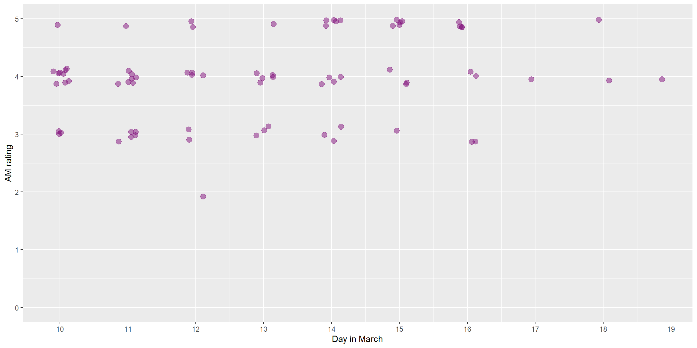
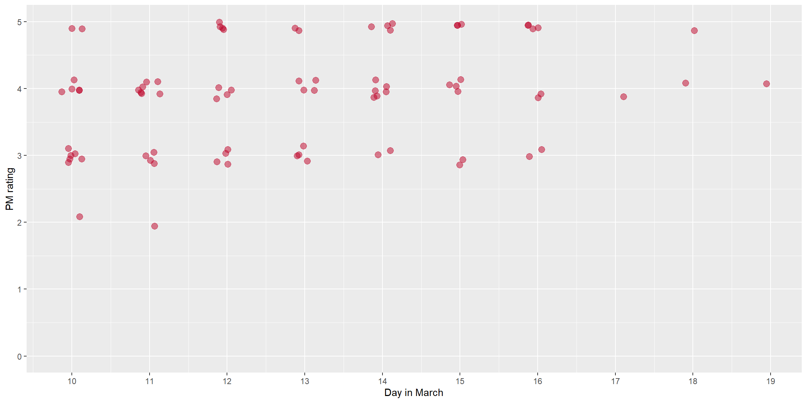

1
Introduction
2
Methods
2.1
Participants
2.2
Key definitions
2.3
Measures and variables
2.4
Derived variables and formats
2.4.1
Habitual sleep
2.4.2
Sleep per day
2.5
Analysis
3
Habitual sleep
3.1
Per player
3.2
Team summary
3.3
Plots
4
In-flight sleep
4.1
Per player
4.1.1
Table: Per sleep bout
4.1.2
Plots: Per day
4.2
Team summary
4.2.1
Table: Per sleep bout
4.2.2
Plots: Daily sleep
4.2.3
Tables: Per day across in-flight period
5
Tournament sleep
5.1
Distinct sleep periods
5.2
Sleep per day
5.3
Individual profiles
5.3.1
Distinct sleep periods
5.3.2
Sleep per day
6
Whole-tour sleep
6.1
Sleep bouts
6.1.1
Bed and wake times
6.1.2
Sleep duration
6.1.3
Sleep latency
6.1.4
Sleep efficiency
6.1.5
Total duration of wake bouts
6.1.6
Number of wake bouts
6.1.7
Average duration of wake bouts
6.2
Per day
7
Individual profiles
7.1
Per sleep bout
7.1.1
Sleep duration
7.1.2
Sleep latency
7.1.3
Sleep efficiency
7.1.4
Total duration of wake bouts
7.1.5
Number of wake bouts
7.1.6
Average duration of wake bouts
7.2
Per day
8
Jetlag
8.1
AM rating
8.2
PM rating
9
Well-being
9.1
Fatigue
9.2
Sleep quality
9.3
Soreness
9.4
Stress
9.5
Overall score
Study 3: Sleep, perceived jet-lag and perceived well-being in elite women cricketers
Chapter 8
Jetlag
8.1
AM rating

8.2
PM rating
